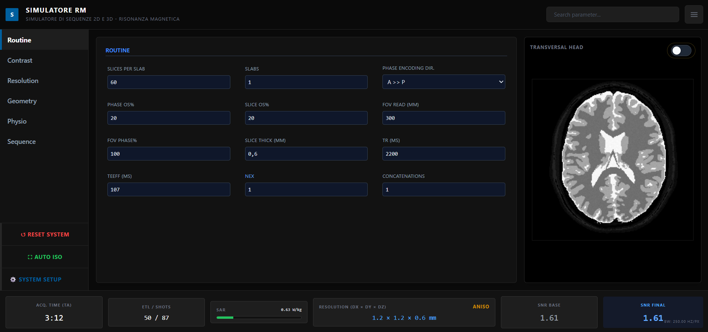
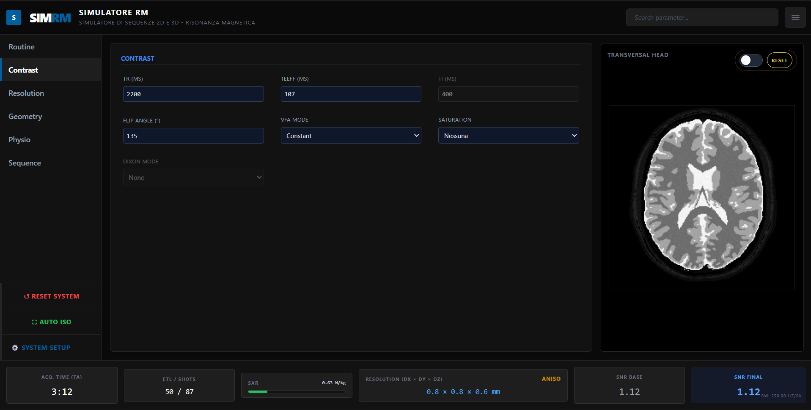
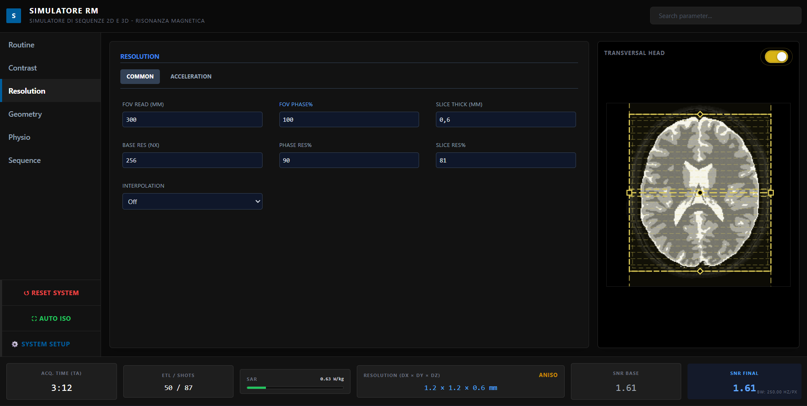

SIMRM: Simulatore di Sequenze 2D e 3D - Risonanza Magnetica

L'attuale architettura del simulatore è strutturata su un ecosistema modulare avanzato (FastAPI per il backend Python, JavaScript e HTML5 per il frontend).
Sviluppato da Francesco Fugaro, il sistema permette di validare i limiti operativi in tempo reale tramite un'interfaccia di simulazione di sequenze di risonanza magnetica.
Motore di rendering basato su fisica reale
Simulazione kernel di ricostruzione IA. GAIN per incremento SNR e SHARP per ottimizzazione bordi.
Treni ad angolo variabile (VFA) per riduzione SAR tramite angolo efficace (αRMS) di 50°.
Campionamento frazionario per riduzione TA, con gestione degradazione SNR proporzionale.
Il simulatore di sequenze RM opera su una base fisica rigorosa, passando da un approccio puramente calcolativo a un sistema di restrizione bidirezionale che replica il comportamento di una vera console clinica
Esplora le sezioni del simulatore progettate per la didattica interattiva.

Regolazione di TR, TE e FA con feedback istantaneo.

Controllo FOV e matrice per analisi voxel e SNR.
Le registrazioni sono approvate manualmente. Inserisci i dati istituzionali.